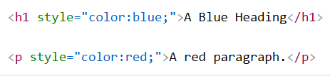
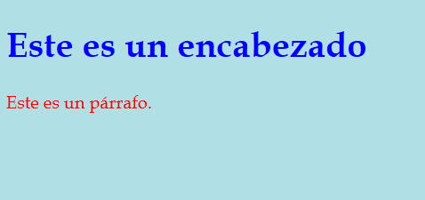
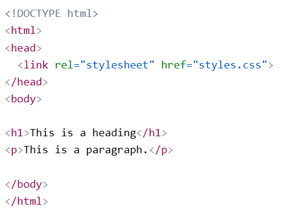
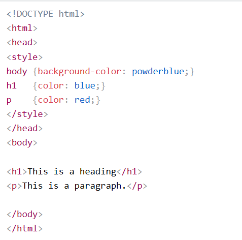

Las siglas CSS (Cascading Style Sheets) significan «Hojas de estilo en cascada» y parten de un concepto simple pero muy potente: aplicar estilos
(colores, formas, márgenes, etc...) a uno o varios documentos (generalmente documentos HTML, páginas webs) de forma automática y masiva.
Las hojas de estilo en cascada (CSS) se utilizan para dar formato al diseño de una página web.
Con CSS, puedes controlar el color, la fuente, el tamaño del texto, el espaciado entre elementos,cómo se posicionan y distribuyen los elementos,
qué imágenes o colores de fondo se utilizarán, diferentes visualizaciones para diferentes dispositivos y tamaños de pantalla.
Se puede agregar CSS a los documentos HTML de 3 maneras:
El CSS en línea se utiliza para aplicar un estilo único a un solo elemento HTML.
Una hoja de estilo CSS en línea utiliza el styleatributo de un elemento HTML.
El siguiente ejemplo establece el color del texto del <"h1> elemento en azul y el color del texto del <"p> elemento en rojo:


Se utiliza una hoja de estilos externa para definir el estilo de muchas páginas HTML.
Para utilizar una hoja de estilos externa, agregue un enlace a ella en la
sección de cada página HTML:
Se utiliza una hoja de estilo CSS interna para definir el estilo de una página HTML específica.
Un CSS interno se define en la <"head>sección de una página HTML, dentro de un <"style>elemento.
El siguiente ejemplo establece el color del texto de TODOS los <"h1>elementos (de esa página) en azul y el color del texto de TODOS
los <"p>elementos en rojo. Además, la página se mostrará con un color de fondo azul claro:
